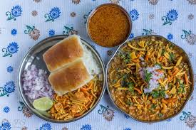
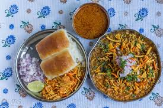

Kolhapur is a historic and ancient holy city in Maharashtra, India. Situated on the banks of river Panchganga, Kolhapur is the largest city in Southern Maharashtra. Prior to Indian independence, Kolhapur was a 19 gun salute princely state (Kolhapur State) ruled by the Bhosale Chhatrapati of the Maratha Empire. Kolhapur is Known for its Kolhapuri Chappal and the Establishment of Kolhapur is done by Chhatrapati Shahu Maharaj